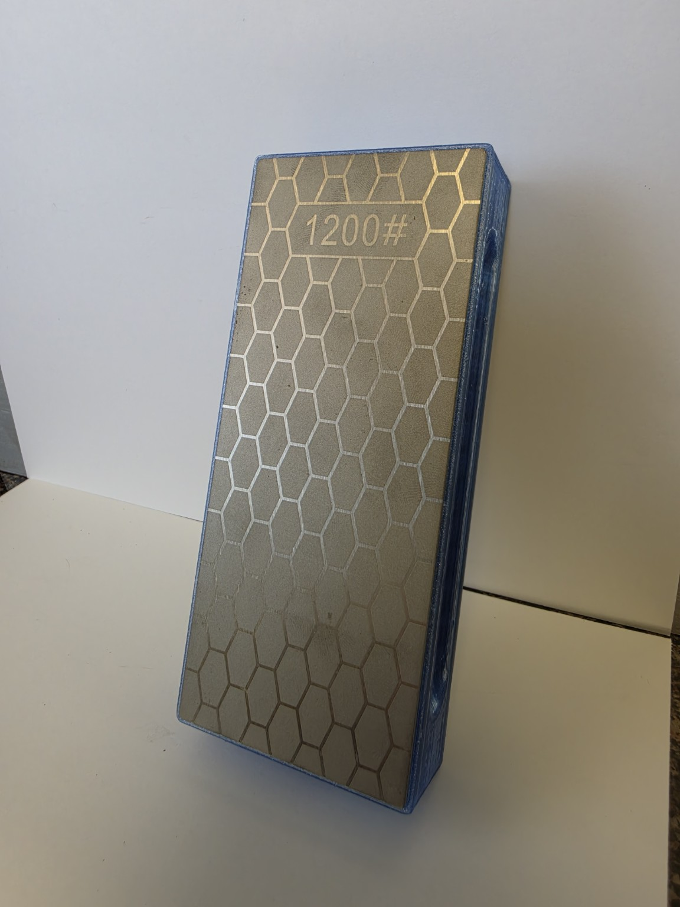

NEED A PART NOW
NEED A PART NOWTHE ONE WE RAN OVER WITH A BULLDOZER
Jamesy
A tough, no-nonsense two-sided knife sharpener with a thick body, permanently attached diamond plates and no loose parts.

PRODUCT DETAILS
Tough and straightforward.
- Diamond plates600 grit on one side and 1,200 grit on the other
- Diamond plate size2.5 inches wide × 6 inches long
- Holder size2.625 inches wide × 6.125 inches long × 1.000 inch tall
- ConstructionBoth diamond plates are permanently attached
- Standard colorTranslucent light blue
- Base / leather stropNot included

WHY THE NAME?
Jamesy
Jamesy is what we called my brother when he was younger. He is the toughest man I know, so the sharpener bearing his name has a thick body, two permanently attached diamond plates and no loose parts.
HOW TO USE IT
Watch the complete sharpening lesson
See how to hold the knife and sharpener, maintain a consistent angle and work through the diamond plates.
Watch the How to Use VideoAvailable from this independent retailer. Product pricing is set by the retailer.